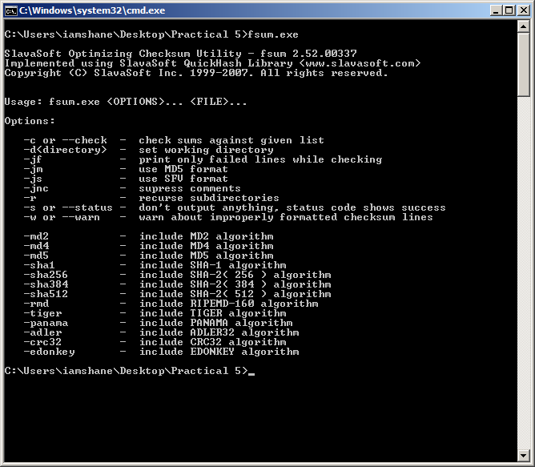

Welcome to the site
This site was developed for a Security Principles assignment based upon Digital Certificates. The site is best viewed in Mozilla Firefox 7 but it should be fine to view it in Google Chrome or Safari. If you're using Internet Explorer to view this site then stop immediately and get yourself a proper browser to view it in.
For this research there are several Hash Function exercises that I had to complete. I will explain the different exercises and how they were carried out , also the findings that came from conducting these exercises but firstly lets explain a Hash Function.
Note. For this research I am using a Linux OS laptop and the internet browser is Mozilla Firefox. I am also using a Virtual Windows 7 32 bit system for running the FSUM tool.
About Hash Functions
Cryptographic Hash Functions are used to provide integrity to messages and it does this by taking some form of data (file, message, etc), it then performs some calculations and produces a hash value repesenting the data. The hash value is basically a figerprint of the data and it is used to check to see if data has been modified in any way. Hash Functions provide the same sized output for each type of inputted file regardless of it size and as such although two completely different message should not give the same hash value, it is possible that this could happen.
This research will be using the following types of Hash Functions:
- Message Digest Algoritm (MD-5) was designed by Ronald Rivest and first published in 1992. It has descended from the earlier MD-4 and produces a 128 bit hash value.
- Secured Hash Algorithm 1 (SHA-1) which is a revised version the original SHA published in 1995 by U.S National Institute of Technology to help solve weaknesses that were discoverd in SHA. It produces a 160 bit hash value and is slower than MD-5.
- Adler-32 was created by Mark Adler in 1995. It produces the smallest hash value of the three algorithms and as such is faster than other two.
About FSUM
Developed by SlavaSoft, it is a command line tool for generating and verifing hashes for files of any kind of format. It includes 11 hash and checksum algorithms such as MD2, MD4, MD5, SHA-1 and SHA-2 just to name a few. The screenshot below shows the different options it provides for file integrity verification.
Reference
All the information used in this website has been sourced from the following locations:
An Illustrated Guide to Cryptographic Hashes. 2011. An Illustrated Guide to Cryptographic Hashes. [ONLINE] Available at: http://unixwiz.net/techtips/iguide-crypto-hashes.html. [Accessed 24 November 2011].
Bruce Schneier, 1995. Applied Cryptography: Protocols, Algorithms, and Source Code in C, 2nd Edition. 2 Edition. Wiley.